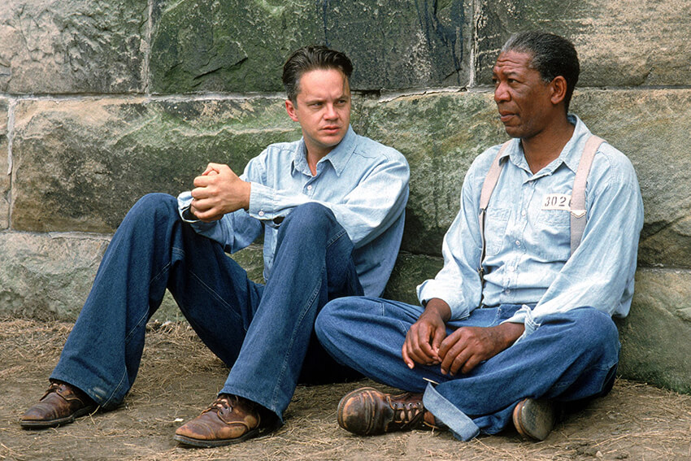

The Shawshank Redemption
best
The Shawshank Redemption
Hope is a good thing, maybe the best of things, and no good thing ever dies.
AFI's 100 Years...100 Movies

The Shawshank Redemption is a 1994 American drama film written and directed by Frank Darabont, and starring Tim Robbins and Morgan Freeman. Adapted from the Stephen King novella Rita Hayworth and Shawshank Redemption, the film tells the story of Andy Dufresne, a banker who is sentenced to life in Shawshank State Penitentiary for the murder of his wife and her lover, despite his claims of innocence. During his time at the prison, he befriends a fellow inmate, Ellis Boyd Red Redding, and finds himself protected by the guards after the warden begins using him in his money-laundering operation...
Directed :Frank Darabont
Screenplay :Frank Darabont
Writers :Stephen King
Novel :Shawshank Redemption
Starring :Tim Robbins ,Morgan Freeman ,Bob Gunton ,William Sadler ,Clancy Brown ,Gil Bellows ,James Whitmore ,